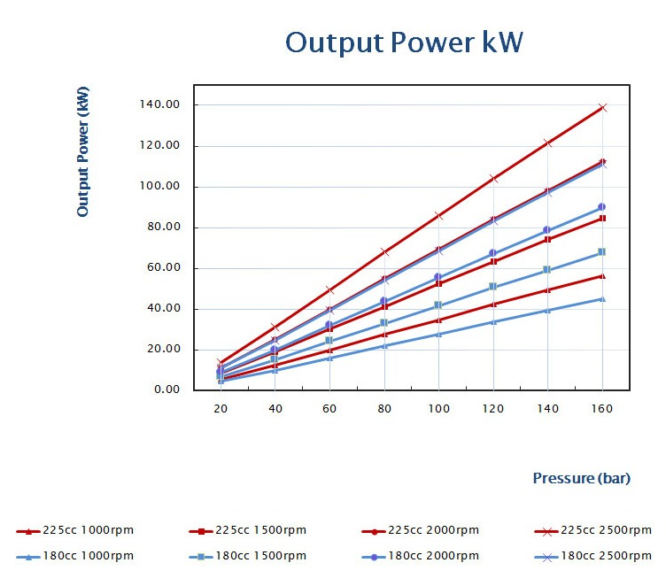
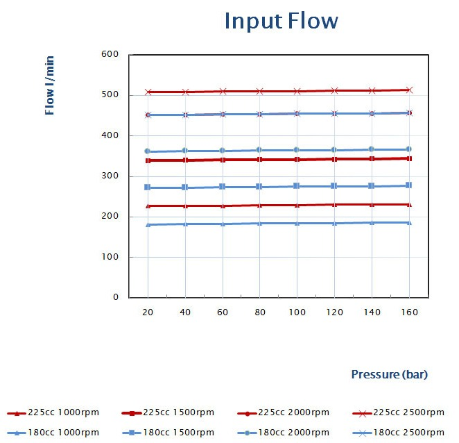
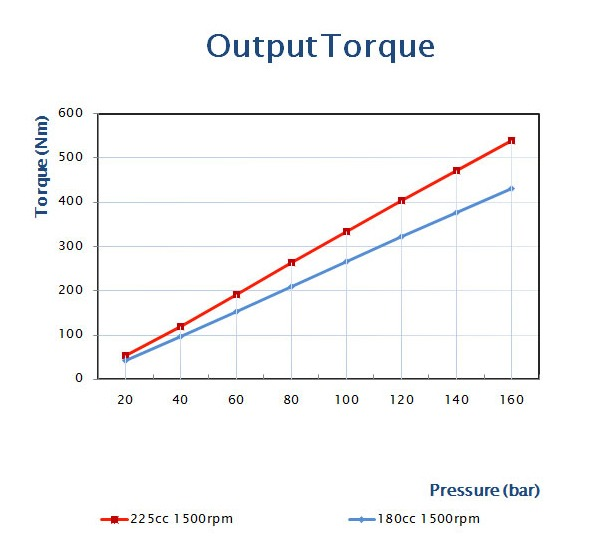
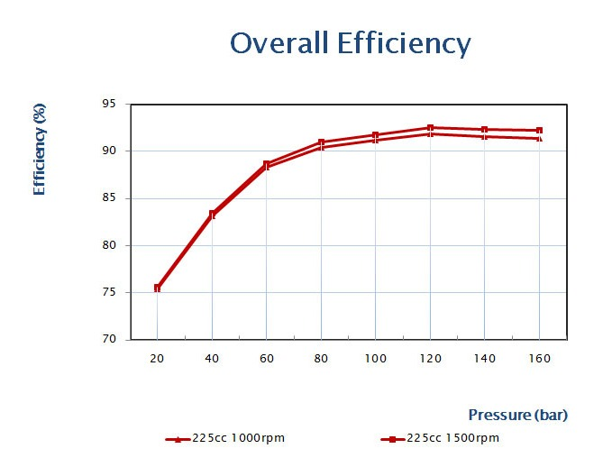
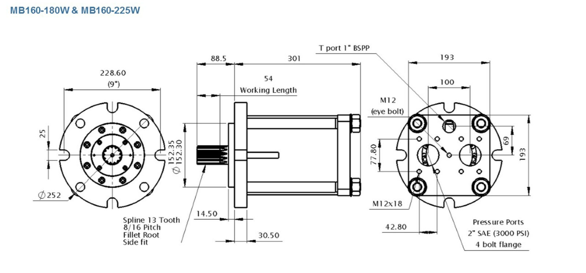

Output Power

Water hydraulic products
Review oil-free hydraulic components engineered around 316 stainless wetted materials, water-compatible wear interfaces, and real industrial pressure requirements.
The M180 axial piston motor is engineered for reliable operation using tap water, making it suited to high-output applications where oil contamination must be avoided. Displacement options include 135.0 cc/rev and 225 cc/rev for larger industrial and marine hydraulic systems.

These charts use the supplied product data images for output power, input flow, output torque, and overall efficiency.





135.0 cc/rev and 225 cc/rev options support high torque demand while staying inside a water hydraulic architecture.
Built for clean hydraulic systems where water is the working medium and petroleum leakage is unacceptable.
Designed for boosted inlet operation with mechanical seal construction for larger system integration.
Appropriate for high-load equipment in marine, infrastructure, desalination, and industrial environments.
Oil-free rotary power for offshore equipment where water hydraulic actuation removes petroleum leakage risk.
Oil-free rotary power for large winches where water hydraulic actuation removes petroleum leakage risk.
Oil-free rotary power for heavy conveyors where water hydraulic actuation removes petroleum leakage risk.
Oil-free rotary power for desalination systems where water hydraulic actuation removes petroleum leakage risk.
Oil-free rotary power for municipal infrastructure where water hydraulic actuation removes petroleum leakage risk.
Oil-free rotary power for industrial drives where water hydraulic actuation removes petroleum leakage risk.
Application pages connect this section to specific water hydraulic projects and operating problems.
The WaterQuest M180 axial piston water hydraulic motor is engineered for tap water operation with 135.0 cc/rev and 225 cc/rev displacement options at 160 bar.